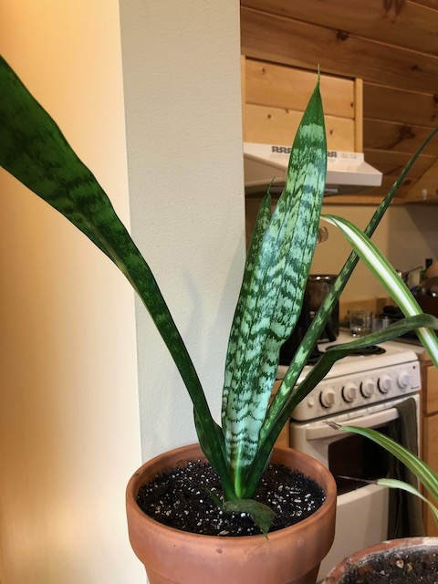
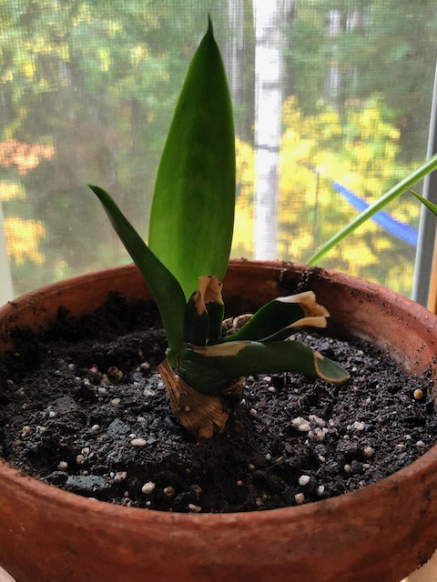
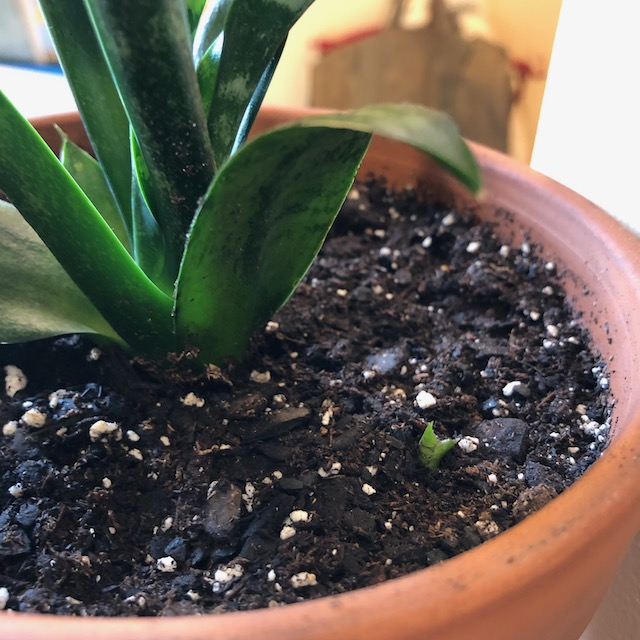
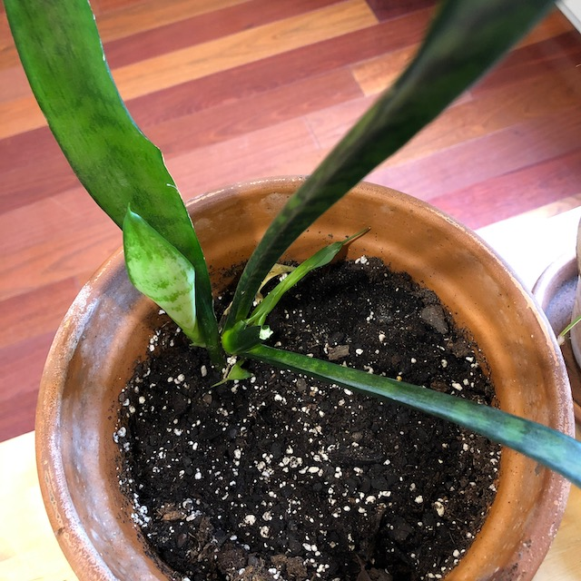

plant-tour/Snake Plants
Published 2020-10-04
I haven’t had snake plants for very long, but what I have learned is that they are incredibly resilient and tolerant of butchery. Maybe even moreso than jades.

These two were originally the same plant, received from my mom. I had it sitting on a windowsill and while I was out of town for a while a few different friends stayed at my place. When I got home the snake plant had been snapped off at its stem—most of the plant was lying on the floor. I certainly don’t blame anyone—I had it in a place where it was easy to lower the window shade on top of it, which I think is what happened.
I was kind of sad about it and wasn’t sure what else to do, so I just stuck the snapped off portion back in the pot, and to my surprise, both sections lived and continued to grow—the snapped off top put down new roots, and the existing roots shot up new leaves!
Once I realized what was happening, I seperated them into their own pots.
Additionally, one of them is starting a new shoot!

I’m not sure, but I suspect that when I seperated them I damaged the roots, so some isolated roots decided to start a new plant. Amazing.
Before I realized that they were going to survive, I got another one from mom—and proceeded to leave the cutting out on the counter for a week before finally planting it. By then it was pretty withered, and I didn’t expect it to survive—but of course, it has.
